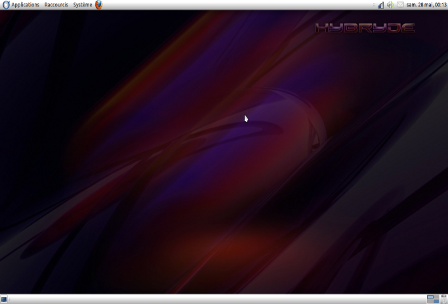

Mate Desktop MATE (pronounced "mate-teh" in Spanish) is a free desktop environment initially using the GTK+ 3.x toolkit and designed for UNIX-like operating systems.
It is a fork of GNOME 2, and its name comes from yerba mate, the leaves of which are used to prepare a stimulating beverage in Latin America.
To allow for installation without conflicts with GNOME 3 components, several applications have been renamed.
As a result, MATE and GNOME 3 can be installed side-by-side, which was not possible between GNOME 2 and GNOME 3.
